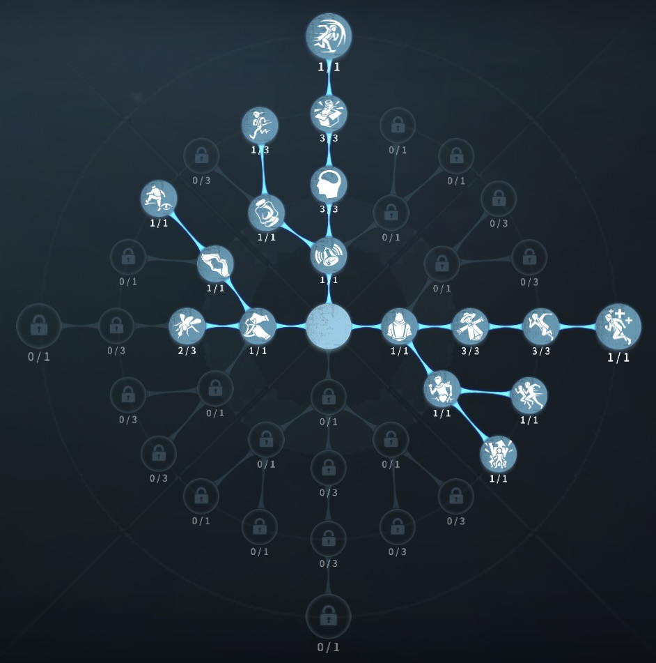
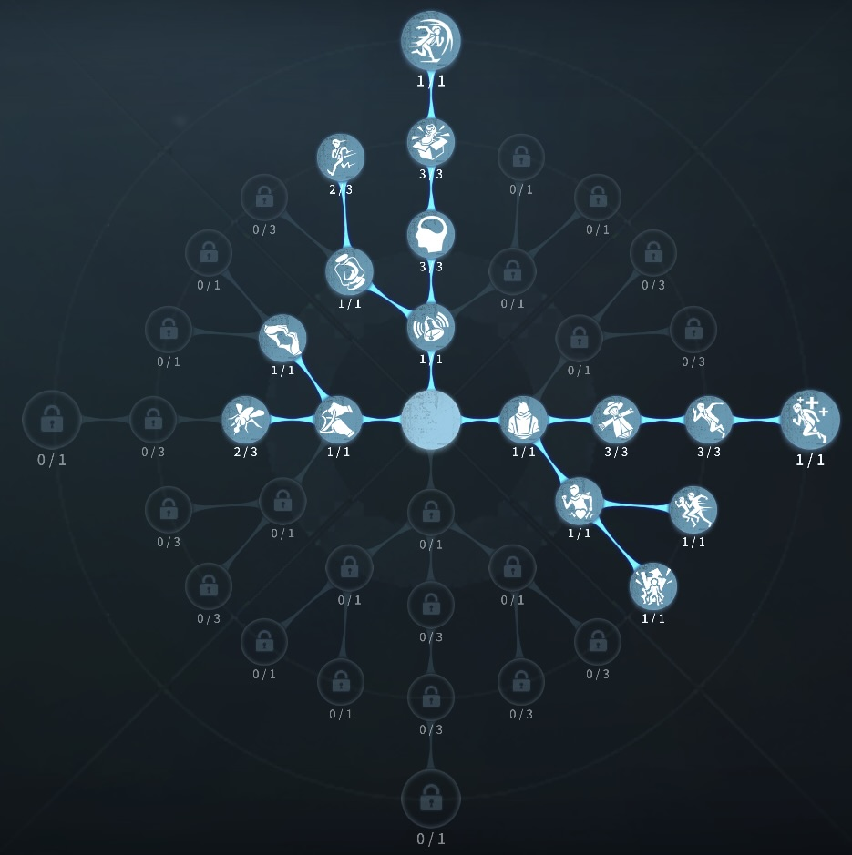

呪術師の評価
魔像でハンターをスタン
外在特質と特徴
特質1:猿の魔像
・5.1m以内にハンターがいる状態でスキルを使用すると対象をスタンすることができる。1消費で1秒スタン、3消費で4秒スタン
特質2:魔像守護
・17m以内でハンターが近くにいればいるほど魔像がチャージされる。魔像を入手するたびチャージ速度が11％減少する最大77％。 呪術師がダメージを受けるたびに魔像が1つ溜まる。呪術師の付近12.7m以内にほかのサバイバーがいた場合チャージ速度が35％低下。 危機一髪中に魔像はチャージされず、ダメージを受けても魔像はたまらない。特質3:魔力庇護
・呪術師が味方の治療に成功する、または味方が呪術師の治療に成功すると対象サバイバーは庇護を受け、ダメージを食らうと呪術師の魔像が1つ溜まる。庇護効果は危機一髪中は発動せず、ダウンすると解除される。特質4:魔像反動
・治療時間20％増加特徴
1スタン、3スタンの使い分けが必要板間、窓枠まであと少し間に合わないなどの 時に1スタン、板間で1スタン入れて板当てなど、スタンの練度が必要
また、魔力庇護も強い
駆け引き好きにはおすすめ！
基本的な立ち回り方
1. 追われた時
基本的1スタンなどの駆け引きが重要 板間、窓枠に間に合わなそうな時は、1スタン入れて切り抜けよう！ 実質2攻撃で2スタンもらえるので、延びなそう時は無理に1スタン使うより セカンドチェイスに残しておこう
2. 追われない時
解読をする。
救助サバイバーを治療することで魔力庇護が発動するので、治療してあげても良い。
あまり粘着をしてしまうと、サバイバーが近くにいて魔像チャージが遅いので枯渇のしてしまう
ある程度が肝心
おすすめの内在人格
フライホイール感覚順応型人格
この内在人格は、感覚順応で板窓を監視して防衛反応でチェイスを高めた人格

フライホイールチェイス型人格
この内在人格は、防衛反応でチェイスを最大化し、観客効果で解読を早めた人格


みんなのコメント